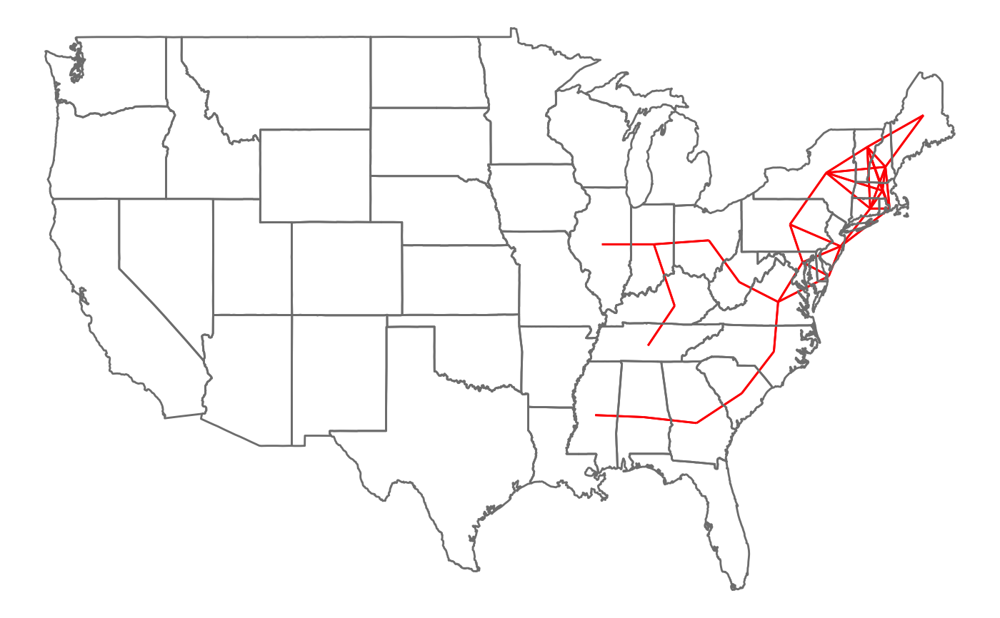

R/geo_join.R
geo_join.RdThis allows joining based on combinations of longitudes and latitudes. If
you are using a distance metric that is *not* based on latitude and
longitude, use distance_join instead. Distances are
calculated based on the distHaversine, distGeo,
distCosine, etc methods in the geosphere package.
geo_join( x, y, by = NULL, max_dist, method = c("haversine", "geo", "cosine", "meeus", "vincentysphere", "vincentyellipsoid"), unit = c("miles", "km"), mode = "inner", distance_col = NULL, ... ) geo_inner_join( x, y, by = NULL, method = "haversine", max_dist = 1, distance_col = NULL, ... ) geo_left_join( x, y, by = NULL, method = "haversine", max_dist = 1, distance_col = NULL, ... ) geo_right_join( x, y, by = NULL, method = "haversine", max_dist = 1, distance_col = NULL, ... ) geo_full_join( x, y, by = NULL, method = "haversine", max_dist = 1, distance_col = NULL, ... ) geo_semi_join( x, y, by = NULL, method = "haversine", max_dist = 1, distance_col = NULL, ... ) geo_anti_join( x, y, by = NULL, method = "haversine", max_dist = 1, distance_col = NULL, ... )
| x | A tbl |
|---|---|
| y | A tbl |
| by | Columns by which to join the two tables |
| max_dist | Maximum distance to use for joining |
| method | Method to use for computing distance: one of "haversine" (default), "geo", "cosine", "meeus", "vincentysphere", "vincentyellipsoid" |
| unit | Unit of distance for threshold (default "miles") |
| mode | One of "inner", "left", "right", "full" "semi", or "anti" |
| distance_col | If given, will add a column with this name containing the geographical distance between the two |
| ... | Extra arguments passed on to the distance method |
"Haversine" was chosen as default since in some tests it is approximately the fastest method. Note that by far the slowest method is vincentyellipsoid, and on fuzzy joins should only be used when there are very few pairs and accuracy is imperative.
If you need to use a custom geo method, you may want to write it directly
with the multi_by and multi_match_fun arguments to
fuzzy_join.
library(dplyr) data("state") # find pairs of US states whose centers are within # 200 miles of each other states <- data_frame(state = state.name, longitude = state.center$x, latitude = state.center$y) s1 <- rename(states, state1 = state) s2 <- rename(states, state2 = state) pairs <- s1 %>% geo_inner_join(s2, max_dist = 200) %>% filter(state1 != state2)#>pairs#> # A tibble: 74 x 6 #> state1 longitude.x latitude.x state2 longitude.y latitude.y #> <chr> <dbl> <dbl> <chr> <dbl> <dbl> #> 1 Alabama -86.8 32.6 Georgia -83.4 32.3 #> 2 Alabama -86.8 32.6 Mississippi -89.8 32.7 #> 3 Connecticut -72.4 41.6 Massachusetts -71.6 42.4 #> 4 Connecticut -72.4 41.6 New Hampshire -71.4 43.4 #> 5 Connecticut -72.4 41.6 New Jersey -74.2 40.0 #> 6 Connecticut -72.4 41.6 New York -75.1 43.1 #> 7 Connecticut -72.4 41.6 Rhode Island -71.1 41.6 #> 8 Connecticut -72.4 41.6 Vermont -72.5 44.3 #> 9 Delaware -75.0 38.7 Maryland -76.6 39.3 #> 10 Delaware -75.0 38.7 New Jersey -74.2 40.0 #> # … with 64 more rows# plot them library(ggplot2) ggplot(pairs, aes(x = longitude.x, y = latitude.x, xend = longitude.y, yend = latitude.y)) + geom_segment(color = "red") + borders("state") + theme_void()# also get distances s1 %>% geo_inner_join(s2, max_dist = 200, distance_col = "distance")#>#> # A tibble: 124 x 7 #> state1 longitude.x latitude.x state2 longitude.y latitude.y distance #> <chr> <dbl> <dbl> <chr> <dbl> <dbl> <dbl> #> 1 Alabama -86.8 32.6 Alabama -86.8 32.6 0 #> 2 Alabama -86.8 32.6 Georgia -83.4 32.3 198. #> 3 Alabama -86.8 32.6 Mississippi -89.8 32.7 178. #> 4 Alaska -127. 49.2 Alaska -127. 49.2 0 #> 5 Arizona -112. 34.2 Arizona -112. 34.2 0 #> 6 Arkansas -92.3 34.7 Arkansas -92.3 34.7 0 #> 7 California -120. 36.5 California -120. 36.5 0 #> 8 Colorado -106. 38.7 Colorado -106. 38.7 0 #> 9 Connectic… -72.4 41.6 Connecticut -72.4 41.6 0 #> 10 Connectic… -72.4 41.6 Massachuse… -71.6 42.4 66.7 #> # … with 114 more rows